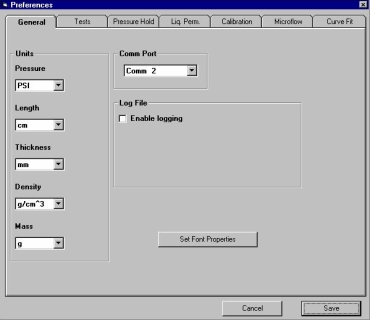

This option allows the user to modify different software and general test settings. It is also an option on the Autotest screen (under the Execute Menu).
Allows the user to select the units to be used for pressure, length, thickness, density and mass in the tests and the results. The selected pressure units are displayed on the CAPWIN Main Screen and are used in all subsequent tests.
Units
The Units box displays a sub-menu that contains a list of pressure units. Four units of pressure are listed:
| PSIA | pounds per square inch |
| KPA | kilopascals |
| KG/CM2 | kilograms per square centimeter |
| BAR | atmospheres |
Below these are four undefined units (---) that can be used to define units other than those shown. Once a new unit is defined, it cannot be deleted or overwritten.
To define a new unit, click on an undefined. The screen at right appears. Enter the unit name. Click Continue.
Returns to the CAPWIN Main Screen without saving the new unit name.
Saves the unit name and advances to the next screen. Go to next step.
Enter Unit factor means enter the conversion factor. The conversion factor is needed by the CAPWIN Software System because the porometer's transducers measure only in PSI.
This number converts the new units to PSI.
| Ex. | BAR * 0.0689 = | PSI |
| KPA * 0.147 = | PSI. |
Returns to the CAPWIN Main Screen without saving either the new unit name or the conversion factor.
Selects the newly created units as the Pressure Units and returns to the CAPWIN Main Screen.
CommPort Options
Demo Mode and Comm 1 (Computer Serial Communications ports), Comm 2,etc
Demo Mode: Permits demonstration of CAPWIN Software System without physically attaching a porometer.
Comm 1, 2: Each "comm" option corresponds to a communications (serial) port on the computer. Select the number of the port that is connected to the porometer.
Log File
Enable Logging Option: creates a log of the basic test results by saving them to a file.
Allows the user to set the endpoints of the test as based on a set pressure or on pore diameter as well as to select the method of showing results at the end of the test.
Auto Increment:
If selected, this option will prevent the user from having to keep changing the output file names every time the particular settings of a test are used. Every time the test and its parameters are used, the particular test trial will get renamed for the user in terms of an incrementing number (001, 002, 003 etc.)
Hide Sample Load Prompts:
Prevents messages from being prompted to the user. After Start Test button is pressed, the software will prompt the user to "Load the sample," then "Make sure the sample chamber is sealed" and so forth three times. Hiding these prompts allows the test to start immediately.
Use Advanced Settings Only:
Affects the appearance of the Autotest setup screen in Supervisor mode. If this option is checked, operators will be taken directly to the full list of setup options. If it is left unchecked, then operators will be presented first with the limited test options available in User mode, with a button for opening the full setup screen.
Use Minimum Pressure in Dry Curve:
The dry curve on the test will start at the minimum pressure specified in the test setup. Normally, it will start at zero, but if this option is selected it will start at a minimum pressure. This option is used in special cases, perhaps with a high pressure sample that requires a higher pressure than zero for a starting point.
Delay Time:
Sets the amount of delay time in order for pressure to stabilize at start of test. The amount of time needed depends on the sample being used and can be obtained through trial and error experimentation.
Points used for averaging:
Used for noisy data (data that jumps around in terms of pressure over time). If is set at above 1, that number of data points will be averaged together to create one data point. If it is set at 0 or 1, only one data point will be used (nothing is averaged). This last option would be used for more regular data.
Pass/Fail Options:
The fail rate of a test is determined by change in pressure over time (user can choose if this is done in seconds or minutes). If the fail rate is dependent on delta p only (change in pressure but not time), the test will fail if the pressure drops below the rate at any one time of the test. If the fail rate is dependent on delta p/delta t, the test will fail if the pressure is regularly dropping at the specified rate.
The two point determination method specifies failure as the final pressure minus the initial pressure over the final time minus the initial time.
The Liner Regression method determines failure by finding a line of best fit through the data points and using the slope of the line for calculations
Graph Options:
Allows the user to change the Y axis or units of displaying the changing pressure of the test. If Autoscale is selected, CapWin will set the scale automatically depending on the maximum and minimum pressures set. If you want to highlight a different range, perhaps for a more detailed report, the y axis can be scaled manually by inputting the range desired.
For use in Liquid Permeability tests. Allows user to set the minimum number of seconds between test readings and to pick whether or not to refill the penetrometer in the elevated pressure test. In this test, a penetrometer (liquid filled tube) is attached to the porometer. Sometimes during testing the tube will be drained before the maximum pressure is reached. This option allows for the tube to be automatically refilled when this happens.
Allows the user to set the value or percentage of maximum flow through the pores at which the Lohm calibration will begin. Usually the calibration begins at zero flow and continues until maximum flow has been reached. However, the user can opt to set the starting point as a percentage of the maximum flow.
Allows the user to control for back pressure and to create criterion for the stable pressure in microflow volume. If the first option is checked, the upstream pressure will be increased to match the increase in pressure on the downstream. If it is not checked, the upstream pressure will remain constant as the downstream pressure changes. A delay can be added to the system for stabilization of pressure. At times, when the chamber is sealed, the pressure will increase in the microflow pressure gage. This delay option monitors the pressure gauge; when the pressure has not changed by the first value in the amount of time set by the second value, the test will resume. The next option is for versions of the machine that allow for temperature testing and saves the results of these tests. Setting the Linear Seal Length for flow calculations assumes that some air is being released between the two layers of a multi-layered sample. If selected, it calculates how much flow is escaping per unit length of seal layers.
The Curve Fit utility allows curves and edges in the data file to be smoothed. Before selecting a data file to curve fit, the user must enter values for the following three parameters:
Percentage Error Allowed (0-100)
Percentage Error Allowed (0-100)
This percentage is used to determine if a data point is within the allowable range of difference from the norm. The suggested value is 0.1 percentage error.
Number of Points to Use for Fitting (3-10)
This value determines the number of points the program will use to fit a point to the curve. The number of data points to be used range from 3 to 10 points the points used will increment by the number entered. For example, if you enter 5, the program will first use points 1 through 5 then 2 through 6 and so on. The suggested value to begin is 5 points
Max. Distance Between Any Two Data Points in Psi
The value entered determines whether or not to generate an interpolated data point depending on the distance between two points using the current pressure units.
Hit Cancel to close out of the Preferences window without implementing any changes. Hit save to exit and save changes. You will be returned to the Autotest Screen.
| Back | Next |